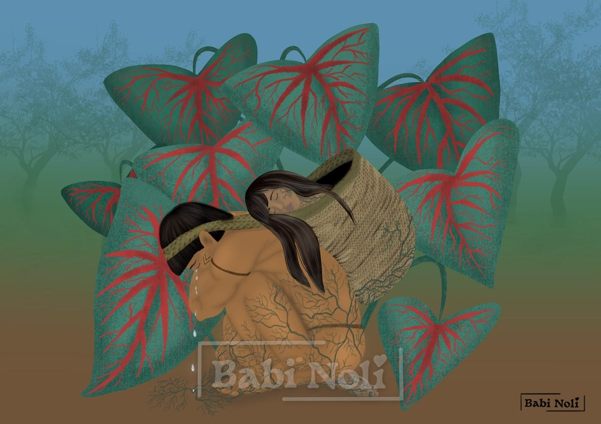

A Tambá-tajá

A tambá-tajá é uma planta cultivada na Amazônia. Suas folhas têm formato triangular, com três pontas, semelhante a um coração. Além disso, ela possui um conjunto de duas folhas: uma grande, ligada a uma menor, na parte de trás. É conhecida por trazer sorte a quem a cultiva ou simplesmente a tem em casa.
Diz a lenda do povo Macuxi que a tambá-tajá surgiu do amor entre dois jovens indígenas. Esse jovem casal, recém-casado, vivia feliz e apaixonado quando a jovem ficou muito doente, o que a levou à paralisia das pernas.
O jovem guerreiro a amava mais que tudo e sabia que ela estava passando por uma situação muito difícil. Ele só queria estar ao lado dela, mas precisava sair para trazer comida pra casa. Não queria deixá-la sozinha e, após muitas noites sem dormir, preocupado com essa situação, teve uma grande ideia.
Ele teceu um grande cesto de palha, com uma alça tipo tipoia, para carregar sua amada doente, paralítica, para onde quer que ele fosse. Os dois seguiram juntos: conversavam, riam, cantavam, contavam histórias. Mas, com o passar do tempo, a saúde da jovem foi piorando. As risadas deram lugar a longos períodos de silêncio. Ele cuidava dela com tanto amor que todos que os conheciam sabiam que ela era a razão da vida dele.
Um certo dia, ele caminhava carregando-a no cesto, como de costume, quando percebeu que o silêncio estava maior que o habitual e que o peso também estava diferente. Chamou-a, mas não obteve resposta. Parou de caminhar à beira de um igarapé, desceu o cesto e pousou-o no chão. Chamou-a novamente, tocou levemente a sua face e seus cabelos, mas ela não se movia. Ele então percebeu que ela já havia partido.
Nesse momento, uma tristeza profunda o invadiu. Acariciando seus cabelos, prometeu que nunca se separariam, que nem a morte iria conseguir tal feito.
Ele começou a cavar um buraco fundo; cavou com tanta força, como se isso a fosse trazer de volta. No fim, cansado, carregou-a no colo e deitou-se no buraco abraçado a ela. Suas lágrimas umedeceram a terra sob os seus corpos. Ele então adormeceu junto a ela.
De repente, raízes começaram a crescer onde suas lágrimas caíram. Elas cresceram lentamente, envolvendo os dois completamente. Após nove luas, o jovem casal havia desaparecido e, em seu lugar, havia uma majestosa planta verde-escura, com grandes folhas em formato de coração e sulcos vermelhos, ramificados como as veias do corpo humano. As folhas grandes carregavam nas costas uma pequena folha, simbolizando o jovem que carregou sua amada nas costas por tantos anos.
Hoje em dia, a tambá-tajá é cultivada como símbolo de amor verdadeiro e duradouro.
Curiosidades
Na Amazônia, a tambá-tajá é cultivada em casa como amuleto do amor e da proteção. Segundo a crença popular, a folha pequena nas costas da grande indica que há amor naquela casa.
Afinal, que planta é a tambá-tajá? As fontes não chegam a um acordo, e há duas candidatas, ambas da família das aráceas:
- Uma forma de taioba que já foi descrita com o nome Xanthosoma atrovirens var. appendiculatum. O nome appendiculatum se refere a um apêndice na folha, o que lembra a folhinha nas costas da grande. Hoje os botânicos tratam esse nome como sinônimo da taioba comum (Xanthosoma sagittifolium), uma planta de folhas grandes em forma de coração.
- O caládio (Caladium bicolor), nativo da Amazônia e também chamado de tajá ou coração-de-jesus. Suas folhas em forma de coração podem ter tons de verde, branco, rosa e vermelho. O caládio é tóxico se ingerido: é planta de enfeite, não de comer.
O povo Macuxi vive na região do Monte Roraima, entre o Brasil, a Venezuela e a Guiana. Sua língua pertence à família Karib, e no Brasil eles são cerca de 33 mil pessoas, que vivem principalmente nos campos e serras do norte de Roraima.